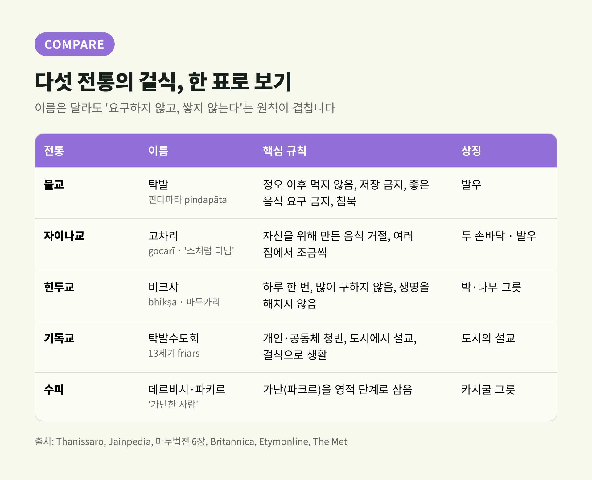
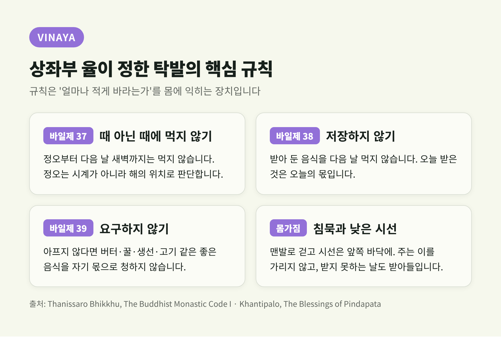
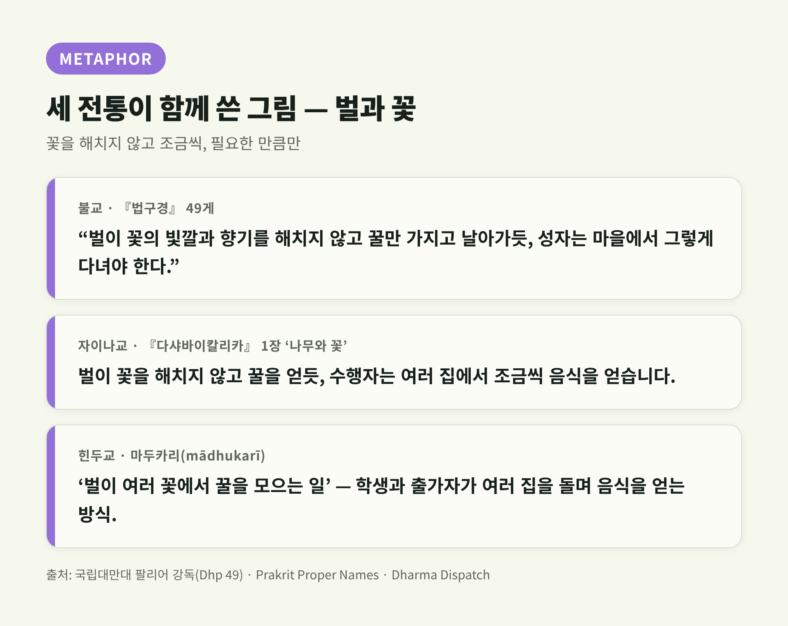
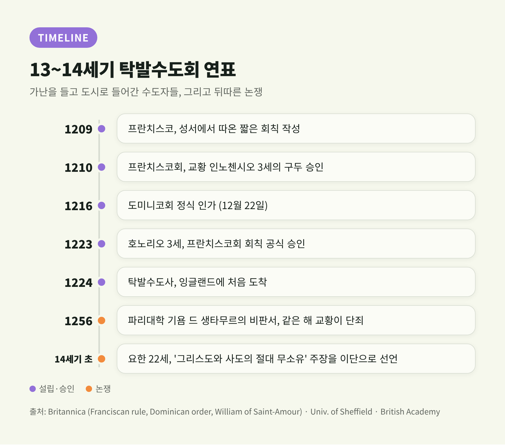
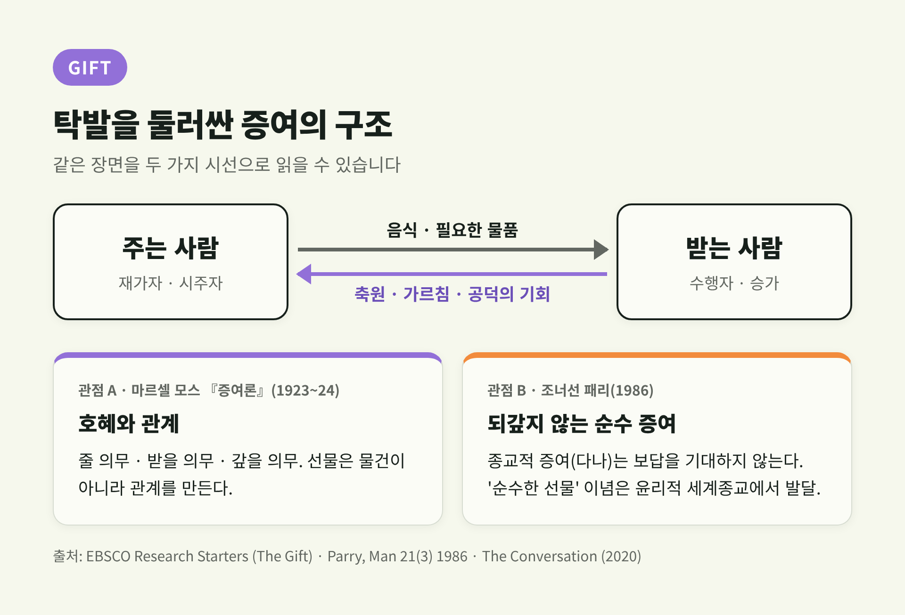
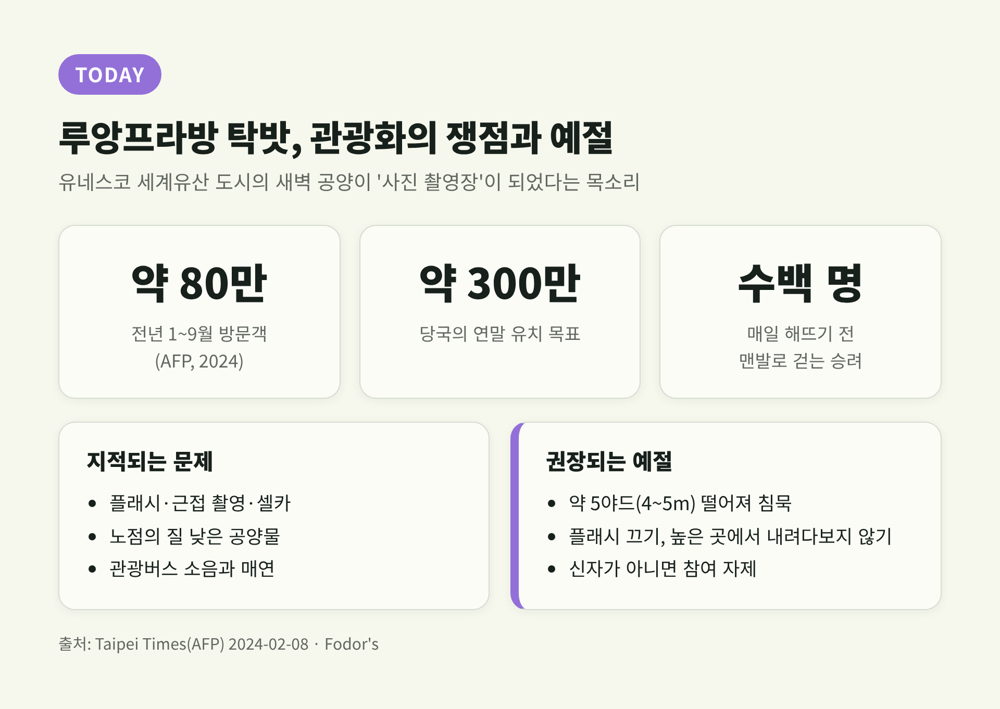

탁발의 비교종교학 — 왜 여러 전통의 수행자는 음식을 빌어 먹었을까

오늘은 탁발과 걸식을 비교종교학의 눈으로 정리해 보려 합니다. 불교, 자이나교, 힌두교, 기독교, 이슬람 수피 전통은 서로 다른 교리를 가졌습니다. 그런데도 수행자가 음식을 스스로 마련하지 않고 남에게 받아 먹는 관행이 놀랄 만큼 닮아 있습니다.
먼저 요약부터 드리겠습니다.
- 다섯 전통 모두에서 걸식은 '가난의 결과'가 아니라 스스로 고른 수행 방식이었습니다.
- 규칙은 대체로 비슷합니다. 요구하지 않고, 저장하지 않고, 한 집에 부담을 주지 않습니다.
- 그리고 걸식은 늘 주는 사람을 전제합니다. 그래서 탁발은 개인 수행이면서 동시에 공동체의 관계이기도 합니다.
이 글은 특정 신앙의 옳고 그름을 따지지 않습니다. 각 전통이 스스로를 어떻게 설명해 왔는지, 학자들은 그것을 어떻게 읽는지를 나란히 놓아 보겠습니다.

불교의 탁발 — 발우에 떨어지는 한 덩이 음식
탁발의 팔리어 원어는 핀다파타(piṇḍapāta)입니다. 직역하면 "음식 덩어리가 발우에 떨어짐"이라는 뜻입니다. 출가 수행자를 뜻하는 비구(bhikkhu)라는 말 자체가 영어로 '걸식하는 사람(almsman)'으로 옮겨질 만큼, 걸식은 불교 출가 생활의 정체성과 맞닿아 있습니다.
한국어 '탁발(托鉢)'은 발우를 받쳐 든다는 뜻입니다. 한국민족문화대백과사전은 탁발을 두고 출가자에게는 간소한 삶과 아집·아만을 버리는 수행이고, 보시하는 이에게는 복덕을 기르는 일이라고 설명합니다. 수행자와 주는 사람, 양쪽의 의미를 함께 적어 두었다는 점이 눈에 띕니다.
규칙은 율(律, Vinaya)에 꽤 구체적으로 남아 있습니다. 상좌부 율의 바일제 37조는 정오부터 다음 날 새벽까지를 '때 아닌 때'로 정하고, 이때 음식을 먹으면 참회하도록 합니다. 정오는 시계가 아니라 해의 위치로 판단합니다. 38조는 받아 둔 음식을 다음 날 먹는 것을 금합니다. 저장하지 말라는 뜻입니다. 39조는 아프지 않은데 버터·꿀·생선·고기·우유 같은 좋은 음식을 자기 몫으로 요청해 먹는 것을 금합니다.

몸가짐도 정해져 있습니다. 상좌부 승려 칸티팔로의 해설에 따르면 승려는 가사를 단정히 입고 맨발로 걷습니다. 시선은 앞쪽 바닥에 두고, 기침이나 발 구르기로 주의를 끌지 않습니다. 부자와 가난한 이를 가리지 않고 주는 것을 받으며, 무엇을 달라고 하지 않습니다. 아무것도 받지 못하는 날도 있습니다.
전승에는 붓다가 가난한 아이가 내민 흙 한 줌을 받았다는 이야기도 있습니다. 무엇을 주었느냐보다 어떤 마음으로 주었느냐가 중요하다는 가르침으로 전해집니다.
오늘날 이 모습이 가장 잘 남아 있는 곳은 태국·라오스·미얀마 같은 상좌부 불교권입니다. 태국에는 약 30만 명의 승려가 있고, 상당수에게 아침 탁발 공양이 하루 식사의 중심입니다. 상좌부 규율은 승려의 농사 노동을 금하기 때문에, 탁발은 선택이 아니라 생활의 구조 자체입니다.
한국 불교에서 탁발이 줄어든 이유
한국 사찰에서 아침 탁발 행렬을 보기 어려운 데에는 몇 겹의 역사가 겹쳐 있습니다. 다만 이 부분은 확인되는 범위가 제한적이라, 근거가 있는 것만 적겠습니다.
첫째는 조선의 억불 정책입니다. 1449년(세종 31) 외부 승려의 도성 출입이 처음 제한되었습니다. 1543년(중종 38) 『대전후속록』은 승려의 도성 출입을 전면 금지했고, 어기면 장 100대에 처하도록 했습니다. 1785년 『대전통편』도 공적·사적 목적을 가리지 않고 출입을 막았습니다. 도시 한복판으로 들어갈 수 없었으니, 마을을 도는 탁발이 일상의 공적 풍경이 되기는 어려웠을 것입니다.
둘째는 동아시아 선종의 노동 전통입니다. 당나라 백장회해(720~814)의 청규에 귀속되는 말로 "하루 일하지 않으면 하루 먹지 않는다(一日不做一日不食)"가 있습니다. 선원은 농사와 노동을 수행에 포함해 자급했습니다. 다만 백장의 '혁신' 서사는 그의 사후 150년 넘게 지난 송대에 다듬어졌다는 학설도 있어, 이를 한 인물의 개혁으로 단정하기는 조심스럽습니다.
셋째는 현대의 문제입니다. 한국민족문화대백과사전은 탁발로 생계를 잇는 사이비 승려가 늘어나자 대한불교조계종 등이 모든 승려의 탁발을 일체 금하고 있다고 적습니다. 금지가 시작된 정확한 연도는 이번 조사에서 확인하지 못했습니다.
그렇다고 탁발의 정신이 사라진 것은 아닙니다. 2004년 3월 1일 도법·수경 스님은 지리산 노고단에서 약 3년 일정의 '생명평화 탁발순례'를 시작했습니다. 도법 스님은 탁발을 "사람들에게 밥을 얻어 육신을 지탱하고 스승에게 진리를 얻어 정신을 살리는 것"이라고 풀었습니다. 예전엔 매일의 끼니였던 탁발이, 지금은 상징적인 순례의 언어로 이어지고 있는 셈입니다.
자이나교의 고차리 — 소처럼, 그리고 벌처럼
자이나교 출가자의 걸식은 고차리(gocarī)라고 부릅니다. 문자 그대로는 "소처럼 다님"입니다. 소가 풀 끝을 조금씩 뜯으며 들판을 옮겨 가듯, 여러 집에서 조금씩 받는다는 뜻입니다.
여기에 벌의 비유가 더해집니다. 자이나 경전 『다샤바이칼리카 수트라』의 첫 장 '드루마푸슈피카(나무와 꽃)'는 벌이 꽃을 해치지 않고 꿀을 얻듯 수행자도 그렇게 음식을 얻으라고 가르칩니다. 한 해설서는 벌의 특징을 넷으로 정리합니다. 생존을 위해 파괴하지 않고, 자연히 생긴 것을 모으고, 여러 꽃에서 조금씩 얻고, 당장 필요한 만큼만 가져가 저장하지 않는다는 것입니다.

흥미롭게도 같은 비유가 불교에도 있습니다. 『법구경』 49게는 "벌이 꽃의 빛깔과 향기를 해치지 않고 꿀만 가지고 날아가듯, 성자는 마을에서 그렇게 다녀야 한다"고 말합니다. 같은 시대 같은 땅에서 자란 두 사문 전통이 같은 그림을 쓴 것입니다.
자이나교의 규칙은 비폭력(아힘사) 원칙 때문에 더 엄격합니다. 출가자는 직접 요리하지 않습니다. 자신을 위해 음식을 만들게 하지도, 자신을 위해 특별히 만든 음식을 받지도 않습니다. 한 집에서 조금만 받아, 그 집이 다시 밥을 지을 필요가 없게 합니다. 음식을 새로 짓는 일 자체가 생명을 해칠 수 있다고 보기 때문입니다.
종파마다 방식도 다릅니다. 디감바라 출가자는 식기 없이 하루 한 번, 선 채로, 모은 두 손바닥에 받아 먹습니다. 슈베탐바라 출가자는 발우를 쓰고, 그중 무르티푸자크 계열은 하루 두 번 탁발합니다. 재가자에게 공양은 '손님과 나누는 서원(아티티 삼비바가)'으로 불리는 의무이자 공덕입니다.
힌두 전통의 비크샤 — 생애 단계로서의 걸식
힌두 전통에서 걸식을 뜻하는 말은 비크샤(bhikṣā)입니다. 힌두 맥락에서는 자아를 낮추고 에고를 이기는 의미로 설명됩니다.
힌두 전통의 특징은 걸식이 인생의 특정 단계와 묶여 있다는 점입니다. 성사(聖絲) 입문식을 마친 소년은 "바바티 비크샴 데히(부인이시여, 공양을 주소서)"라고 외치며 첫 걸식 의례를 치릅니다. 그리고 생애의 마지막 단계인 산야사(출가기)에서 걸식은 다시 삶의 방식이 됩니다.
『마누법전』 6장은 출가자의 걸식을 이렇게 규정합니다. 발우·지팡이·물병을 들고 늘 떠돌며 어떤 생명도 해치지 말 것. 발우는 금속이 아닌 박·나무·흙·대나무로 만들 것. 하루 한 번만 걸식하고 많이 구하지 말 것. 걸식에 집착하면 감각의 쾌락에 집착하게 된다는 경고가 붙어 있습니다.
여기서도 벌이 등장합니다. 마두카리(mādhukarī)는 "벌이 여러 꽃에서 꿀을 모으는 일"이라는 뜻으로, 여러 집에서 조금씩 음식을 얻는 방식입니다. 한 기록에 따르면 1911년 푸나(지금의 푸네)에서는 100명이 넘는 가난한 브라만 소년이 약 30집을 돌며 마두카리로 학업을 이어 갔고, 이 관행은 1970년대 초 무렵 사실상 사라졌다고 합니다. 단일 기록이므로 하나의 사례로만 읽어 주시면 좋겠습니다.
오늘날의 사두(sādhu)는 인도·네팔에 약 60개 출가 종파를 이룹니다. 전통적 이상은 걸식·고행·독신이지만, 실제 생활은 매우 다양합니다. 대부분 보시와 지역 산물로 소박하게 지내고, 아쉬람이나 수도원이 숙식을 제공하기도 합니다. 이상과 실제 사이의 거리를 인정하는 것이 이 전통을 정확히 보는 첫걸음입니다.
13세기 유럽의 탁발수도회 — 도시로 나간 가난
기독교에서 걸식 수행이 제도로 자리 잡은 것은 13세기입니다. 이른바 4대 탁발수도회, 곧 프란치스코회·도미니코회·가르멜회·아우구스티노회가 이때 등장했습니다. 이들은 개인뿐 아니라 공동체 차원의 청빈을 내세웠고, 일상의 필요를 걸식으로 채웠습니다.
이전 수도승과의 차이는 '장소'에 있습니다. 수도승은 한 수도원에 머무는 정주 서원을 했습니다. 탁발수도사(friar)는 정주 서원 없이 도시를 다니며 설교하고 병자를 돌봤습니다. 성장하는 중세 도시 한가운데로 가난을 들고 들어간 셈입니다.

연대를 짚어 보겠습니다. 프란치스코는 1209년 성서에서 따온 짧은 회칙을 썼고, 1210년 교황 인노첸시오 3세의 구두 승인을 받았습니다. 1223년 11월 29일 교황 호노리오 3세가 칙서로 회칙을 공식 승인했습니다. 도미니코회는 1215년 잠정 승인, 1216년 12월 22일 정식 인가를 받았습니다. 남프랑스 알비파를 상대로 한 설교가 설립 목적이었고, 1218년 회원 7명을 파리대학에 보내며 학문의 중심으로 들어갔습니다.
새로운 가난은 갈등도 낳았습니다. 파리대학의 세속 교수 기욤 드 생타무르는 탁발수도회를 강하게 공격했고, 1256년 비판서를 냈다가 같은 해 교황 알렉산데르 4세에게 단죄되었습니다. 14세기 초에는 교황 요한 22세가 "그리스도와 사도들은 개인적으로도 공동으로도 아무것도 소유하지 않았다"는 주장을 이단으로 선언했습니다. 어디까지가 청빈이고 무엇이 정당한 사용인가를 두고, 교회 안에서도 해석이 크게 갈렸던 것입니다.
수피 데르비시와 '파키르'라는 말
이슬람 수피 전통에서는 단어 자체가 가난을 품고 있습니다. 영어 fakir는 아랍어 파키르(faqīr), 곧 '가난한 사람'에서 왔습니다. 원래는 걸식으로 사는 무슬림 성자를 가리켰습니다. 무함마드에게 귀속되는 말 "가난은 나의 자랑"에서 비롯했다는 설명도 전해집니다. dervish 역시 페르시아어 다르비시(darvēsh), 곧 '거지·가난한 이'에서 나온 말로, 아랍어 파키르와 같은 뜻입니다.
참고로 19세기 영어권에서는 fakir를 힌두 고행자에게까지 넓혀 쓰기 시작했습니다. 어원 사전은 이를 잘못된 확대 적용으로 봅니다. 우리가 '못 위에 눕는 파키르' 같은 이미지를 떠올린다면, 그것은 원래 뜻과 꽤 멀어진 셈입니다.
수피 수행에서 가난(파크르, faqr)은 거쳐야 할 영적 단계(마캄) 가운데 하나입니다. 세속의 소유로부터 독립하고 오직 신만을 필요로 하는 상태를 뜻합니다. 떠돌이 데르비시는 카시쿨(kashkul)이라는 걸식 그릇을 들었습니다. 이 그릇은 사람들이 그를 알아보고 음식을 건네게 하는 표식이었고, 비어 있을 때는 세속 욕망을 비운 자아의 상징으로도 읽혔습니다.
공통 구조 — 무소유, 겸손, 그리고 주는 사람
다섯 전통을 나란히 놓으면 세 가지 공통점이 보입니다.
하나는 무소유입니다. 저장하지 않고, 요구하지 않고, 필요한 만큼만 받습니다. 둘째는 겸손입니다. 남의 손에 끼니를 맡기는 일은 자기 힘으로 산다는 자부심을 내려놓는 연습입니다. 셋째는 관계입니다. 걸식은 혼자서는 성립하지 않습니다. 반드시 주는 사람이 있어야 합니다.

이 셋째 지점에서 인류학이 등장합니다. 마르셀 모스는 1923~24년 발표한 『증여론』에서 선물에는 세 가지 의무, 곧 줄 의무·받을 의무·갚을 의무가 따른다고 보았습니다. 선물은 물건이 아니라 관계를 만든다는 것입니다.
이 시각으로 보면 탁발은 일종의 순환입니다. 재가자는 음식을 주고, 수행자는 축원과 가르침, 그리고 '공덕을 쌓을 기회'를 돌려줍니다. 불교에서 승가를 "세상에서 으뜸가는 복밭"이라 부르는 것도 같은 맥락에서 읽을 수 있습니다. 태국 승려들의 탁발을 연구한 학자들은 공동체가 바로 이 형식화된 보시 한가운데서 형성된다고 봅니다. 2007년 미얀마에서 승려들이 발우를 뒤집어 군부의 공양을 거부한 일은, 받지 않는 것도 강한 사회적 메시지가 될 수 있음을 보여 줍니다.
반대 해석도 있습니다. 인류학자 조너선 패리는 1986년 논문에서 힌두의 종교적 증여(다나)는 되갚음을 기대하지 않는다는 점에서 모스의 호혜 모델과 맞지 않는다고 주장했습니다. 그는 오히려 '대가 없는 순수한 선물'이라는 이념 자체가, 공덕과 구원이 행위에 달려 있다고 보는 윤리적 세계종교에서 발달한다고 보았습니다. 전통 내부의 자기 이해도 이쪽에 가깝습니다. 탁발은 "구걸도 자선도 아닌" 영적 실천이라는 설명이 대표적입니다.
어느 한쪽이 정답이라기보다, 두 관점은 같은 현상의 다른 면을 비춘다고 생각합니다. 주는 사람의 마음에서는 순수한 보시이고, 사회 전체로 보면 관계를 짓는 교환이라는 것입니다.
오늘의 탁발 — 관광, 건강, 그리고 질문들
현대의 탁발은 새로운 문제와 마주하고 있습니다.
가장 많이 거론되는 곳은 라오스 루앙프라방입니다. 유네스코 세계유산 도시인 이곳에서는 매일 해뜨기 전 수백 명의 승려가 맨발로 침묵 속에 찹쌀밥 공양을 받습니다. 문제는 관광객입니다. 플래시를 터뜨리고, 얼굴 가까이 휴대전화를 들이밀고, 셀카를 찍습니다. 노점에서 산 질 낮은 공양물 때문에 탈이 나기도 하고, 승려가 그런 음식을 조용히 버리는 일도 있다고 합니다. 2024년 AFP 보도에 따르면 루앙프라방에는 전년 1~9월 약 80만 명이 다녀갔고, 당국은 연말까지 약 300만 명을 목표로 했습니다. 주민들은 의식이 "사진 촬영장처럼 됐다"고 말합니다.

여행 매체들이 권하는 예절은 단순합니다. 약 5야드(4~5m) 떨어져서 지켜보고, 침묵하고, 플래시를 끕니다. 신자가 아니라면 공양에 직접 참여하지 않는 편이 낫습니다. 참여한다면 머리를 승려보다 낮게 둡니다.
건강 문제도 있습니다. 태국 쭐랄롱꼰대 연구에 따르면 태국 승려의 거의 절반이 비만이고, 40% 이상이 고콜레스테롤을 겪습니다. 오후 불식 대신 단 음료에 기대고, 시판 공양 음식에 당과 지방이 많다는 점이 원인으로 꼽힙니다. 태국 공중보건 당국은 건강한 공양을 권고했고, 승가도 처음으로 승려 건강 정책을 내놓았습니다. 음식을 건네는 행위가 같아도, 무엇을 건네느냐는 시대에 따라 바뀐다는 점을 보여 줍니다.
한계도 분명히 적어 두겠습니다. 이 글은 여러 전통을 짧게 비교한 것이라, 각 전통 안의 다양한 종파와 지역 차이를 다 담지 못했습니다. 한국 조계종의 탁발 금지 연도처럼 확인하지 못한 사실도 있습니다.
정리하면 이렇습니다.
불교는 발우를, 자이나 디감바라는 두 손바닥을, 힌두 산야신은 박으로 만든 그릇을, 수피는 카시쿨을 들었습니다. 유럽의 탁발수도사는 그 가난을 도시 한가운데로 가져갔습니다. 모양은 달라도 질문은 같았습니다. 얼마나 적게 가지고 살 수 있는가, 그리고 그 삶을 누가 지탱하는가.
"탁발은 혼자 하는 수행이 아니라, 주는 사람과 함께 완성되는 수행입니다."
언젠가 새벽 탁발 행렬을 마주하신다면, 카메라보다 먼저 몇 걸음 물러서는 쪽을 권하고 싶습니다. 그 거리에서 보이는 것이 더 많을 것입니다.
참고자료
- Khantipalo Bhikkhu, The Blessings of Pindapata (Access to Insight)
- Thanissaro Bhikkhu, The Buddhist Monastic Code I, ch.8
- Dhammapada 49 팔리어 강독 (국립대만대)
- 한국민족문화대백과사전 '탁발'
- 조선왕조실록사전 '성중승인금제조'
- 매일신문, 도법·수경 스님 탁발순례 (2004-03-02)
- Wikipedia, Baizhang Huaihai
- Jainpedia, Giving alms
- JES 302 Jain Philosophy Level 3
- Dasvaikalik Sutra 해설 (Padma Prakashan)
- Prakrit Proper Names, Dumapupphiyā
- Wikipedia, Bhiksha
- Manusmriti 6.51–55
- Dharma Dispatch, The Sacred Madhukari Tradition
- Encyclopedia.com, Sādhus and Sādhvīs
- University of Sheffield, Mendicant orders (glossary)
- Britannica, St. Francis of Assisi: The Franciscan rule
- Britannica, Dominican order
- Britannica, William of Saint-Amour
- British Academy, Cum inter nonnullos (번역)
- Etymonline, fakir
- Britannica, faqr
- The Met, Art of the Sufis
- EBSCO Research Starters, The Gift by Marcel Mauss
- Jonathan Parry, "The Gift, the Indian Gift and the 'Indian Gift'", Man 21(3), 1986
- The Conversation, Why Buddhist monks collect alms (2020)
- Irish Times, Thai monks don't eat after noon, so why are they fat?
- Fodor's, Everything you need to know about Tak Bat
- Taipei Times(AFP), Historic Laos town grapples with tourism boom (2024-02-08)